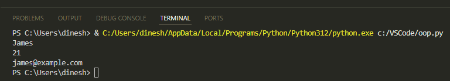
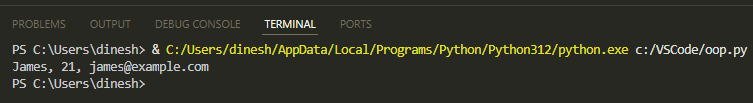
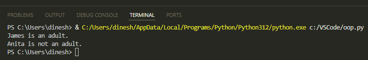
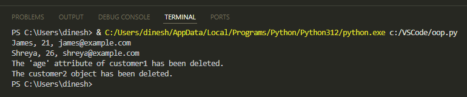
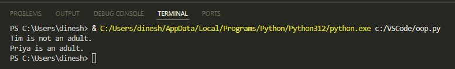
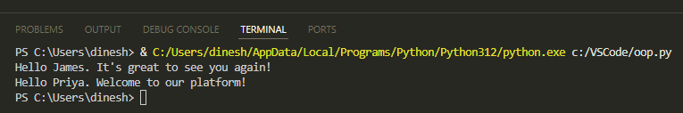
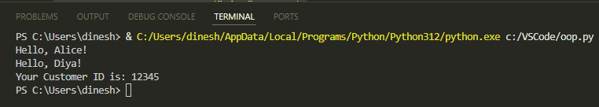

Classes and Objects in Python
This document will help you understand Python classes, objects, inheritance, and polymorphism.
Create a Class and its Object
A class defines a set of attributes and methods that its objects can use. A class is like a blueprint for creating objects.
The following code:
-
Creates a class named
Customerwith customer attributes: name, age, and email address. -
Creates an instance of the
Customerclass namedcustomer1; it meanscustomer1is the object of theCustomerclass. -
Prints the attributes of the
customer1object.
class Customer:
# Initializer / Instance attributes
def __init__(instance, name, age, email):
instance.name = name
instance.age = age
instance.email = email
# Create an object customer1
customer1 = Customer("James", 21, "james@example.com")
# Print values of the customer1 object's attributes
print(customer1.name)
print(customer1.age)
print(customer1.email)
The code uses the init method to assign values to attributes when the object is being created. The first parameter is instance that represents the instance of the class and allows you to access the class's attributes and methods. You can name this parameter anything like myobject.
Run the code and you'll see this output:

String Representation of the Object
In this code, we use the str method to give a string representation of the object:
class Customer:
# Initializer / Instance Attributes
def __init__(instance, name, age, email):
instance.name = name
instance.age = age
instance.email = email
def __str__(instance):
return f"{ instance.name}, {instance.age}, { instance.email}"
# Create an object customer1
customer1 = Customer("James", 21, "james@example.com")
# Print the customer1 object
print(customer1)
When print(customer1) is called, the str method is invoked.
Run the code to see this output:

Add a Method to the Class to Handle Specific Functionality
Let's have a method in the class that checks whether the customer is an adult. In the following example, the is_adult method checks whether the customer is 18 years or older and then prints a message indicating that the customer is adult.
class Customer:
def __init__(instance, name, age, email):
instance.name = name
instance.age = age
instance.email = email
# Method to check if the customer is an adult
def is_adult(instance):
if instance.age >= 18:
print(instance.name + " is an adult.")
else:
print(instance.name + " is not an adult.")
customer1 = Customer("James", 19, "james@example.com")
customer2 = Customer("Anita", 17, "anitha@example.com")
# Check if the customers are adults
customer1.is_adult()
customer2.is_adult()
Output:

Del Keyword
To delete the attributes of objects or the object itself, use the del keyword.
In this example, we delete the customer1 age and then delete the customer2 object. We use the try… except… blocks to catch exceptions that occur when the attribute or object isn't found after deletion and print an error message.
class Customer:
def __init__(instance, name, age, email):
instance.name = name
instance.age = age
instance.email = email
def __str__(instance):
return f"{ instance.name}, {instance.age}, { instance.email}"
customer1 = Customer("James", 21, "james@example.com")
customer2 = Customer("Shreya", 26, "shreya@example.com")
# Print both objects once before deletion.
print(customer1)
print(customer2)
# Delete the age attribute of customer1 object.
del customer1.age
# Try to print customer1 age. This will raise an AttributeError exception.
try:
print(customer1.age)
except AttributeError:
print("The 'age' attribute of customer1 has been deleted.")
# Delete the customer2 object.
del customer2
# Try to print customer2. This will raise a NameError exception.
try:
print(customer2)
except NameError:
print("The customer2 object has been deleted.")
Output:

Inheritance
With inheritance, a child class can inherit the method and attributes of the parent class.
As shown in the following code, when you create the NewCustomer class as a child of the Customer class, it will inherit all the attributes and methods from the Customer class, including the is_adult method and the attributes name, age, and email. When you create an instance of NewCustomer, you can call the isAdult method to check if the customer is an adult. The code also uses the pass keyword to indicate that the child class isn’t adding any method or attributes to itself.
class Customer:
def __init__(instance, name, age, email):
instance.name = name
instance.age = age
instance.email = email
# Method to check if the customer is an adult
def is_adult(instance):
if instance.age >= 18:
print(instance.name + " is an adult.")
else:
print(instance.name + " is not an adult.")
# Child class
class NewCustomer(Customer):
pass
new_customer1 = NewCustomer("Tim", 16, "tim@example.com")
new_customer2 = NewCustomer("Priya", 20, "priya@example.com")
# Check if the new customers are adults
new_customer1.is_adult()
new_customer2.is_adult()
Output:

Method Overriding and Polymorphism
When the child class wants a specific implementation of an inherited method, it can override the method.
In the following code, greet_customer method is overridden in the NewCustomer class to provide a different greeting message. Objects of both classes call this method to display a different message depending on whether the customer is an existing one or a new one. It also shows polymorphism where the same method name has different forms of implementation.
class Customer:
def __init__(instance, name):
instance.name = name
# Method to greet customer
def greet_customer(instance):
print("Hello " + instance.name + ". It's great to see you again!")
# Child class
class NewCustomer(Customer):
# Overriding the greet_customer method from the Customer class
def greet_customer(instance):
print("Hello " + instance.name + ". Welcome to our platform!")
customer1 = Customer("James")
new_customer1 = NewCustomer("Priya")
# Calling the method from the Customer class
customer1.greet_customer()
# Calling the overridden method from the NewCustomer class
new_customer1.greet_customer()
Output:

Super Function
We can use the super function to invoke methods in the parent class.
In the following example, super is used for calling init method of the parent class to set the customer's name. Then, super is again used for calling the get_greeting method of parent class to greet the customer. The child class also adds its own message to the overridden method.
# Parent class
class Customer:
def __init__(instance, name):
instance.name = name
def get_greeting(instance):
print("Hello, " + instance.name + "!")
# Child class inheriting from Customer
class NewCustomer(Customer):
def __init__(instance, name, customer_id):
super().__init__(name) # Call the __init__ method of the parent class
instance.customer_id = customer_id # Additional attribute for NewCustomer
def get_greeting(instance):
super().get_greeting() # Call the parent class's greeting method
print("Your Customer ID is: " + str(instance.customer_id))
customer = Customer("Alice")
new_customer = NewCustomer("Diya", 12345)
customer.get_greeting()
new_customer.get_greeting()
Output:

This document discussed the basic foundation of object-oriented programming, including classes, objects, inheritance, polymorphism, and method overriding. We also covered how to delete objects and attributes that can aid in memory management and the use of the super function for calling the parent class methods.